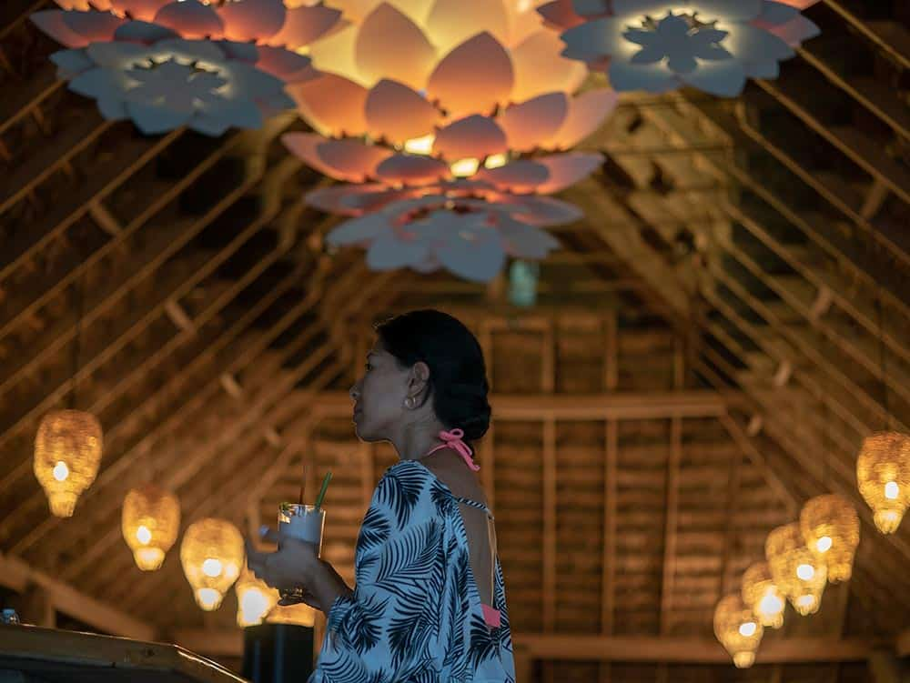
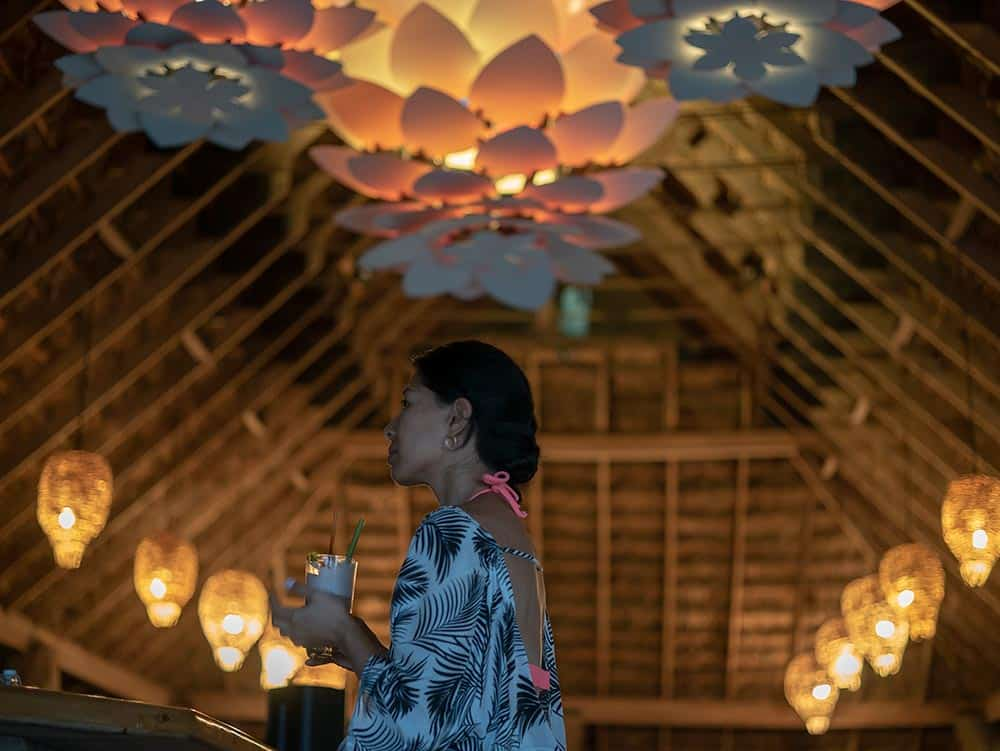
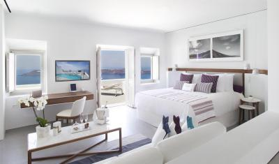
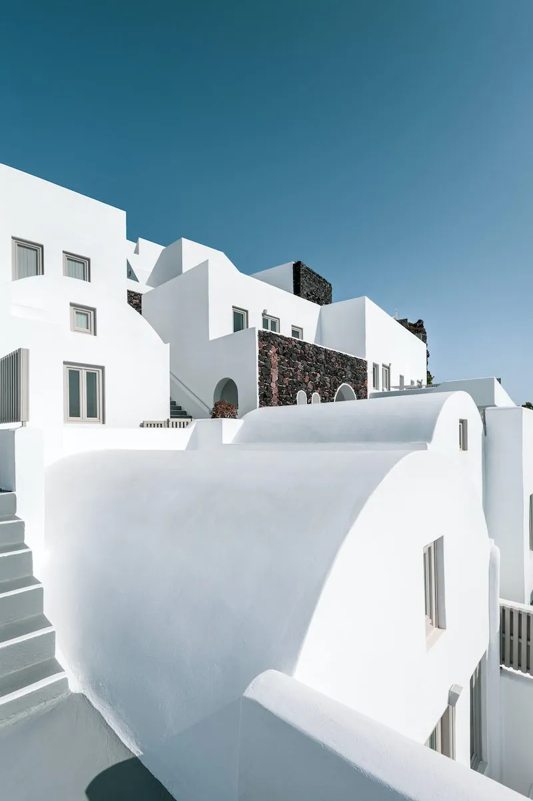
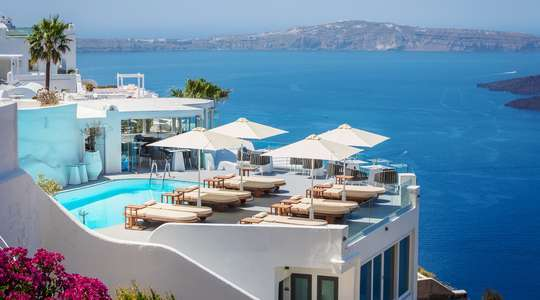
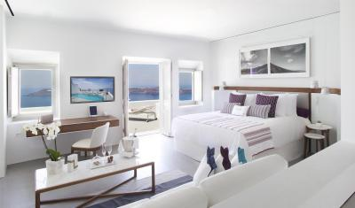
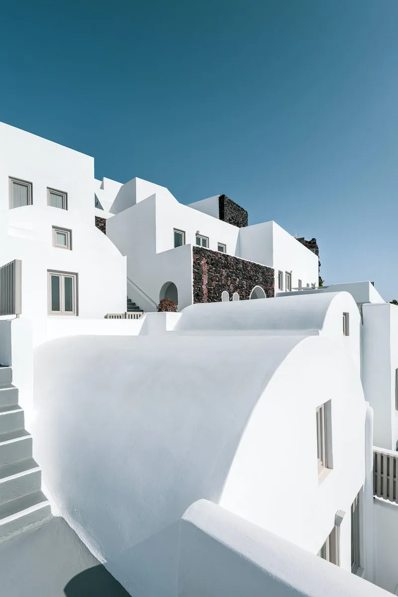
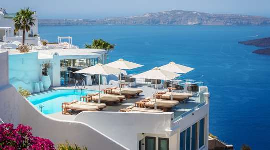

A 45-minute yacht sail from the airport in Ocea gets you to this island paradise in style.
Its villas come with everything a traveler could want out of a vacation: picture-perfect ocean views, private plunge pools, and dedicated butlers, who offer what one reader called "the best personalized service."
if you chosse to make a accomadation with Lulu ressort you won't have to worry about breakfast, lunch and dinner as it comes with the accomadation.
Check in 1:00 pm - Check out 3:00 pm
The cost for onenight in this resort is $680
There are a total of 30 thatched-roof bungalow suites. All suites have water views, outdoor showers, and furnished decks;
most also overlook private slivers of white-sand beach and are kitted out with hammocks, loungers, and fire pits.
The Dining Room has immaculate sea views, and the spectacular SpaTerre complex is underscored by a breezy, two-story atrium.
Check in 1:00 pm - Check out 3:00 pm
The cost to spend one night here is around about $500
 


This 400-acre private island features one six-bedroom villa and eight stylish coastal casitas, all with vacant beaches and lush jungle surroundings.
Each casita has a front porch swing that is perfect for Instagram, an extra-large net hammock,
a totally outdoor bathroom with a tub in the sand, and it is situated on its own own stretch of sand.
Every evening, half and full-day guided activities, including as snorkeling excursions, wildlife treks, and visits to adjacent coffee plantations, are listed on the chalkboard at the island's only restaurant and bar.
Daily yoga and cocktail-making classes are also available.
Check in 1:00 pm - Check out 3:00 pm
To spend a night here it will cost $650 dollars
The staff are really attentive, the rooms are minimalist with opulent accents like oak soaking tubs and comfortable beds, and the location is close to all the Lilo attractions. So if you want to stay somewhere modern and affordable you should book a Accomodation here.
Check in 1:00 pm - Check out 3:00 pm
To spend the night here in Glade Hotel its about $300 dollars

  

 

Our rooms offer Wi-Fi, flat-screen TVs and iPhone docks, as well as minibars, Nespresso machines and balconies with sea views. Suites add living areas and/or plunge pools. A 2-bedroom villa is also available.
Breakfast is available. There's also a refined restaurant, a champagne bar and a terrace. Other amenities include an infinity pool and spa treatments. All the rooms in Loco Hotel are Air-conditioned so you don't have to worry about the heat.
They also provide Laundry service, and its pet friendly.
Check in 2:30 pm - Check out 12:00 pm
to spend a night here in Loco Hotel it will cost you $560